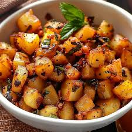

Potato Fry

Description: Crispy and spicy fried potatoes perfect for lunch.
Category: Veg
Cuisine: Indian
Meal Type: Lunch
Cooking Time: 10 mins
Servings: 2
Difficulty: Easy
Ingredients
- Potatoes
- Oil
- Salt
- Chili powder
- Turmeric
Cooking Steps
- Cut potatoes into small pieces
- Heat oil in a pan
- Add potatoes and spices
- Fry until crispy
- Serve hot